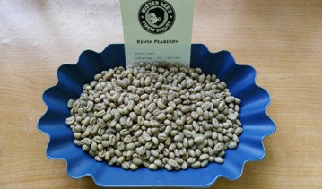

เคนยา

เคนย่ามีระบบคัดเกรดสำหรับกาแฟส่งออกทั้งหมดไม่ว่ากาแฟล็อทนันจะสามารถสืบค้นย้อนหาแหล่งที่มาได้หรือไม่ ระบบคัดเกรดที่ใช้การคัดขนาดเมล็ดกาแฟและคุณภาพเหมือนประเทศอื่น โดยการกำหนดเกรดจะบ่งบอกถึงขนาดและอาจหมายถึงคุณภาพด้วยก็ได้ แม้ว่าขนาดและคุณภาพอาจมีความเชี่อมโยงกันอยู่และเกรด AA ก็ถือว่าเป็นเกรดที่ดีทีสุด แต่เมื่อไม่นานนี้เพิ่งเจอกาแฟเกรด AB ที่มีความซับซ้อนและมีคุณภาพมากnวา เกรด AA หลายๆล็อท